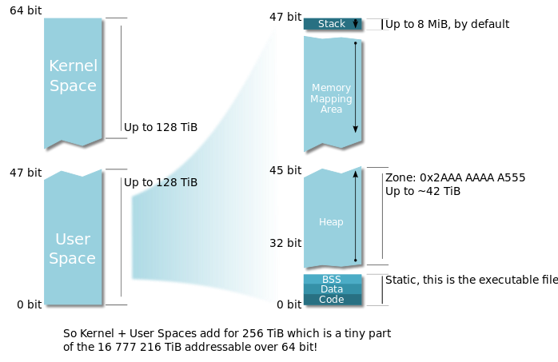

<html>
  <Head>
<meta http-equiv="Content-Type" content="text/html; charset=utf-8">

    
<link rel="stylesheet" href="../static/css/bootstrap.min.css"/>
<link rel="stylesheet" href="../static/css/bootstrap-theme.min.css"/>


    <link rel="stylesheet" href="../static/css/fonts/crmison.css"/>
    <link rel="stylesheet" href="../static/css/fonts/fira_code.css"/>
    <link rel="stylesheet" href="../static/css/fonts/ptsans.css"/>
    <link rel="stylesheet" href="../static/css/katex.min.css"/>
    <link rel="stylesheet" href="../static/css/wiki.css"/>
    <link rel="stylesheet" href="../static/css/codehilite.css"/>

    <script src="../static/js/jquery.min.js"></script>
    <script src="../static/js/bootstrap.bundle.min.js"></script>
    <script src="../static/js/katex.min.js"></script>
    
    

    <title>Demand Paging</title>
  </Head>
  <body>
   
   
<nav class="navbar fixed-top navbar-expand-lg navbar-dark bg-dark">
  <a class="navbar-barnd" href="index.html">Yanyan's Wiki</a>
  <div class="collapse navbar-collapse">
    <div class="navbar-nav">
      <a class="nav-item nav-link active" href="OS2020.html">
        
        操作系统 (2020)</a>
      <a class="nav-item nav-link active" href="SysLab2020.html">
        计算机系统综合实验 (2020)</a>
      <a class="nav-item nav-link active" href="ICS_NJU.html"> 加入我们</a>
    </div>
    <form class="form-inline" autocomplete="off">
      <input id="token-input" type="text" oninput="login();" maxlength="16"
        data-toggle="tooltip" data-placement="bottom"
        title="用于确定身份的作业提交 SHA-1 hash digest。更改后回车或刷新网页生效"></input>
    </form>
  </div>
</nav>

<center>
  <div class="article-container">
    <div class="article">
      <h1 id="demand-paging">Demand Paging</h1>
<div markdown="1"><div class="fenced fenced-blue"><div>
<h4 id="_1">本讲阅读材料</h4>
<p><a href="http://pages.cs.wisc.edu/~remzi/OSTEP/">教科书 (Operating Systems: Three Easy Pieces, OSTEP)</a> 第 21—23 章。</p>
<p>课后习题：</p>
<ul>
<li>使用 <code>LD_PRELOAD</code> hooking，例如打印一些系统/库函数的调用记录和参数。</li>
</ul>
</div></div></div>

<h2 id="_1">进程地址空间的实现</h2>
<p>在之前我们已经复习过虚拟存储：它通过一个 (存储在内存中的) 数据结构维护函数 <math class="inline-math">f</math> 构建地址空间，使得 CPU 在访问任何地址的时候，都把 <math class="inline-math">x</math> 映射到 <math class="inline-math">f(x)</math>。在 x86-64 系列的处理器 (PML4) 中，<math class="inline-math">f</math> 是用一个四级的 radix tree 维护的，而第一级的节点由 CR3 寄存器指定。</p>
<p>特别值得一提的是，操作系统在构建 <math class="inline-math">f</math> 时，通常会将操作系统内核的代码和数据也映射到这个地址空间中——但操作系统会小心地设置访问权限，以防止用户进程窃取操作系统内核的数据。在 x86 系列的处理器中，每一个页目录/页表 (PML4/PDPT) 项都有一个 U/S bit，能够设置为 Ring 3 执行时无法访问——因此即便我们持有一个合法的指针 <code>ptr</code>，<math>f(\texttt{ptr})</math> 是合法的内核代码，我们也不能在进程中通过 <code>void (*ptr)();</code> 调用——越权访问会产生一个 page fault。但是我们却可以把 <code>ptr</code> 的数值设置在中断描述符表中，这样中断到来时切换到 Ring 0, 就可以从 <code>ptr</code> 的代码处开始执行了！</p>
<div markdown="1"><div class="fenced fenced-blue"><div>
<h4 id="_1">事情没那么简单</h4>
<p>虽然我们都觉得这么做很安全也提高了性能，但偏偏硬件还有漏洞。有兴趣的同学可以看看<a href="https://zhuanlan.zhihu.com/p/32757727">Spectre 和 Meltdown</a> 的故事，课程会在操作系统安全部分回到这个话题。为了解决这个问题，就需要在有 bug 的处理器上使用 KPTI (Kernel Page Table Isolation)，只让操作系统内核和进程共享少量并不安全攸关的代码/数据。</p>
</div></div></div>

<p>Linux 进程的地址空间实际看起来就是下图这样：</p>
<p></img></p>
<p>当然了，你如果自己设计操作系统，你可以把内核区域映射到地址空间的任何位置——例如 AbstractMachine 就假设操作系统内核的地址等于物理地址。以及，你如果自己设计/实现操作系统，你也可以自由安排进程各个部分内存的位置 (例如堆栈可以在进程的底部等)。</p>
<p>以 xv6 为例，xv6 内核的代码/数据位于地址 <code>0x80100000</code> (<code>multiboot_header</code>, 用于通用的 boot loader 如 grub 的识别)，系统调用的入口地址在 <code>vector64</code> (<code>0x8010549f</code>; 不同的编译地址可能不同)，用户进程位于地址空间的低位，例如 <code>read</code> 系统调用的 wrapper (<code>ulib.c</code>) 位于地址 <code>0xbaa</code>。</p>
<p>我们不妨调试一下 xv6 的代码，在用户进程 <code>int $0x40</code> 陷入内核执行后，会查找 IDT 并跳转到 <code>vector64</code> (<code>0x8010549f</code>)。我们在 qemu 的 monitor 中可以查看执行 <code>int</code> 指令前后的 CPU 状态：</p>
<div class="codehilite"><pre><span></span>(执行 int $0x40 之前)
EAX=00000005 EBX=0000000a ECX=00000000 EDX=00001620
ESI=00000009 EDI=00003f7f EBP=00003f98 ESP=00003f5c
EIP=00000baf EFL=00000216 [----AP-] CPL=3 II=0 A20=1 SMM=0 HLT=0
ES =0023 00000000 ffffffff 00cff300 DPL=3 DS   [-WA]
CS =001b 00000000 ffffffff 00cffa00 DPL=3 CS32 [-R-]
SS =0023 00000000 ffffffff 00cff300 DPL=3 DS   [-WA]
DS =0023 00000000 ffffffff 00cff300 DPL=3 DS   [-WA]
LDT=0000 00000000 0000ffff 00008200 DPL=0 LDT
TR =0028 80111788 00000067 00408900 DPL=0 TSS32-avl
GDT=     801117f0 0000002f
IDT=     80113ca0 000007ff
CR0=80010011 CR2=00000000 CR3=0df73000 CR4=00000010
</pre></div>


<div class="codehilite"><pre><span></span>(执行 int $0x40 之后)
EAX=00000005 EBX=0000000a ECX=00000000 EDX=00001620
ESI=00000009 EDI=00003f7f EBP=00003f98 ESP=8dffefec
EIP=8010549f EFL=00000216 [----AP-] CPL=0 II=0 A20=1 SMM=0 HLT=0
ES =0023 00000000 ffffffff 00cff300 DPL=3 DS   [-WA]
CS =0008 00000000 ffffffff 00cf9a00 DPL=0 CS32 [-R-]
SS =0010 00000000 ffffffff 00cf9300 DPL=0 DS   [-WA]
DS =0023 00000000 ffffffff 00cff300 DPL=3 DS   [-WA]
LDT=0000 00000000 0000ffff 00008200 DPL=0 LDT
TR =0028 80111788 00000067 00408900 DPL=0 TSS32-avl
GDT=     801117f0 0000002f
IDT=     80113ca0 000007ff
CR0=80010011 CR2=00000000 CR3=0df73000 CR4=00000010
</pre></div>


<p>细心地你应该能看到以下寄存器发生了变化：</p>
<ul>
<li>CS/SS 从 <code>DPL=3</code> 变为了 <code>DPL=0</code>, 系统调用的确从用户态进入了内核态；</li>
<li>ESP 从用户空间的地址变为了内核空间的地址 (如果你熟悉 x86 的 task switching, 这里发生了一次任务切换)；</li>
<li>EIP 变为了<code>8010549f</code>, 恰好是 <code>vector64</code>。</li>
</ul>
<p>我们在 QEMU 的 monitor 里还可以查看当前 MMU 的内存映射：</p>
<div class="codehilite"><pre><span></span><span class="err">(qemu) info mem</span>
<span class="err">0000000000000000-0000000000002000 0000000000002000 urw</span>
<span class="err">0000000000002000-0000000000003000 0000000000001000 -rw</span>
<span class="err">0000000000003000-0000000000004000 0000000000001000 urw</span>
<span class="err">0000000080000000-0000000080100000 0000000000100000 -rw</span>
<span class="err">0000000080100000-0000000080107000 0000000000007000 -r-</span>
<span class="err">0000000080107000-000000008e000000 000000000def9000 -rw</span>
<span class="err">00000000fe000000-0000000100000000 0000000002000000 -rw</span>
</pre></div>


<div markdown="1"><div class="fenced fenced-green"><div>
<h4 id="_1">几个小问题</h4>
<p>首先，你会发现 <code>CR3</code> 寄存器的数值在系统调用前后没有发生变化——为什么 CR3 是这样的数值？另一个问题是 memory mapping 里有一个很有趣的一项: <code>0x2000-0x3000 (-rw)</code>, 可读可写，但 Ring 3 不能访问。这是什么？如果你能给出正确的解释 (结合代码/手册)，说明你对 xv6 代码的理解已经提升了一个层次了。</p>
<p>以及，jyy 觉得 xv6 是堪称艺术品级的代码，几乎每个细节都相当完美和到位，大家一定一定不要错过！</p>
</div></div></div>

<p>而 demand paging 在此意义上是非常自然的：我们在进程创建的时候，不必为进程分配任何页面，而只是维护 mmap regions。每当缺页发生的时候，根据缺页的信息 (CR2 和堆栈上的 error code) 判断这一页是否是进程实际拥有的——如果进程实际拥有这个页面，就为它分配内存并映射。</p>
<h2 id="swapping">Swapping</h2>
<p>一方面 demand paging 按进程需要加载页面；另一方面，我们也可以把进程的页面从地址空间里 “剥夺”——当然，我们无法预测进程未来是否真的不会访问这个页面，因此我们还需要找一个地方放置这个页面。</p>
<p>聪明的你应该想到了——我们有比 DRAM 大得多的存储设备。我们可以把进程的内存 “交换” (swap) 到存储设备上，这样我们系统中所有运行进程的内存总和，就可以超过物理内存的大小！只要我们的进程访问那些被换出的页面频率够低，系统的性能就几乎不会受到影响——当然，缺页时从磁盘换入页面的延迟是相当大的，因此今天 swapping 一个很大的作用是在系统内存接近过载时，使得操作系统 API 依然能够维持可用 (否则 mmap, sbrk 等系统调用都可能发生失败)，尽最大可能维持进程不会进入 error handling 的状态，从而管理员/daemon 就有机会能释放内存。</p>
<p>关于 swapping 和虚拟存储系统的详细内容，请大家阅读教科书。</p>
    </div>
  </div>
</center>

<div class="footer-bottom">
  <center>
    <div class="copyright"> © 2020 Yanyan Jiang, All rights reserved </div>
  </center>
</div>


    <script>
      $(function () {
        $('[data-toggle="tooltip"]').tooltip()
      })

      $("math").each(function() {
        var tex = $(this).text();
        var html = katex.renderToString(tex, {
          displayMode: $(this).attr('class') == 'block-math',
          throwOnError: false
        });
        $(this).replaceWith(html);
      });

      function get_token() {
        var match = document.cookie.match(new RegExp('(^| )token=([^;]+)'));
        if (match) return match[2];
        else return "";
      }

      var token = get_token();
      var hint = "token", box = $("#token-input");

      if (token == "") { box.val(hint); }
      else { box.val(token); }

      function login() {
        var token = box.val()
        document.cookie = 'token=' + token + '; expires=Fri, 31 Dec 9999 23:59:59 GMT;';
        if (token == '') {
          box.val(hint);
        }
      }
    </script>
  </body>
</html>